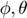

Math4Robots - Examples
Mathematical models are a powerful tool for representing geometric and dynamic aspects of robots. In this file you will see some examples of how the functions implemented in this toolbox can be used for robot modeling.
Contents
Cartesian, cylindrical and spherical coordinates
You can convert points from one coordinate system to another. e.g. Convert the point (2,3,6) in the cartesian coordinate to the cylindrical.
clear all
x = 2;
y = 3;
z = 6;
[car2cyl, car2sph, cyl2car, cyl2sph, sph2car, sph2cyl] = Change_CS;
[rho, theta_c, z] = car2cyl(x,y,z);
rho, theta_c, z
rho =
3.6056
theta_c =
0.9828
z =
6
Rotation matrices
To generate a 3x3 rotation matrix you can call the functions from Rot_Matrix. Recall that the rotation matrices along the x, y and z axis are: , and . e.g. Generate a rotation matrix that corresponds to a rotation of 90° around the x axis and another that corresponds to -45° in the z axis. You can input the angle in radians and in degrees (functions with suffix _d).
[Rotx, Roty, Rotz, Rotx_d, Roty_d, Rotz_d] = Rot_Matrix; [Rx] = Rotx(pi/2) [Rz] = Rotz_d(-45)
Rx =
1.0000 0 0
0 0.0000 -1.0000
0 1.0000 0.0000
theta =
-0.7854
Rz =
0.7071 0.7071 0
-0.7071 0.7071 0
0 0 1.0000
3D Rotation group SO(3)
To check wether a matrix belongs to the SO(3) group you can use the function is_SO(3). Recall that: e.g. Check if a rotation matrix actually belongs to the SO(3) group
R = Rotx(pi)*Roty(-pi/4)*Rotz(pi/2)
is_SO3(R)
%e.g. matrix that does not belong to the rotation group SO(3)
M = eye(3) + 1
is_SO3(M)
R =
0.0000 -0.7071 -0.7071
-1.0000 0.0000 -0.0000
0.0000 0.7071 -0.7071
RRT =
1.0000 0.0000 -0.0000
0.0000 1.0000 -0.0000
-0.0000 -0.0000 1.0000
detR =
1
Yes, it belongs to the SO(3) group
It meets the conditions:
det R = +1
R*R^T = I
M =
2 1 1
1 2 1
1 1 2
RRT =
6 5 5
5 6 5
5 5 6
detR =
4
No, it does not belong to the SO(3) group
It does not meet the conditions:
det R = +1
R*R^T = I
Skew-Symmetric matrix
This function Generates a skew-symmetric matrix from an angular velocity vector . Recall that the skew-symmetric matrix will have the form: e.g.
w = [4; 3; -2]; w_hat = Skew_Symmetric(w);
wx =
4
wy =
3
wz =
-2
w_hat =
0 2 3
-2 0 -4
-3 4 0
Matrix exponential
It generates the solution of the time derivative of rotation matrices. i.e.
syms t e = @(t) Matrix_Exp(w, w_hat,t) fplot(e(t),[0 10]) title('Matrix exponential') xlabel('e^{wt}') ylabel('t') % We can subtitute e.g. t = 1 t = 1 subs(e)
e =
function_handle with value:
@(t)Matrix_Exp(w,w_hat,t)
I =
1 0 0
0 1 0
0 0 1
e_wt =
[ 0.4483*cos(5.3852*t) + 0.5517, 0.3714*sin(5.3852*t) - 0.4138*cos(5.3852*t) + 0.4138, 0.2759*cos(5.3852*t) + 0.5571*sin(5.3852*t) - 0.2759]
[ 0.4138 - 0.3714*sin(5.3852*t) - 0.4138*cos(5.3852*t), 0.6897*cos(5.3852*t) + 0.3103, 0.2069*cos(5.3852*t) - 0.7428*sin(5.3852*t) - 0.2069]
[ 0.2759*cos(5.3852*t) - 0.5571*sin(5.3852*t) - 0.2759, 0.2069*cos(5.3852*t) + 0.7428*sin(5.3852*t) - 0.2069, 0.8621*cos(5.3852*t) + 0.1379]
t =
1
I =
1 0 0
0 1 0
0 0 1
e_wt =
[ 0.4483*cos(5.3852*t) + 0.5517, 0.3714*sin(5.3852*t) - 0.4138*cos(5.3852*t) + 0.4138, 0.2759*cos(5.3852*t) + 0.5571*sin(5.3852*t) - 0.2759]
[ 0.4138 - 0.3714*sin(5.3852*t) - 0.4138*cos(5.3852*t), 0.6897*cos(5.3852*t) + 0.3103, 0.2069*cos(5.3852*t) - 0.7428*sin(5.3852*t) - 0.2069]
[ 0.2759*cos(5.3852*t) - 0.5571*sin(5.3852*t) - 0.2759, 0.2069*cos(5.3852*t) + 0.7428*sin(5.3852*t) - 0.2069, 0.8621*cos(5.3852*t) + 0.1379]
ans =
[ 0.8311, -0.1345, -0.5397]
[ 0.4464, 0.7401, 0.5030]
[ 0.3317, -0.6589, 0.6751]
Rodigues rotation formula
Computes a rotation matrix given an axis and an angle of rotation using the Rodigues rotation formula. e.g.
w = [4; 3; -2]; theta = pi; [RodriguesRT, RodriguesRT_d] = Rodrigues_Formula [e] = RodriguesRT(w, theta);
RodriguesRT =
function_handle with value:
@Rodrigues_Rot_Form
RodriguesRT_d =
function_handle with value:
@Rodrigues_Rot_Form_d
I =
1 0 0
0 1 0
0 0 1
wx =
4
wy =
3
wz =
-2
w_hat =
0 2 3
-2 0 -4
-3 4 0
w_hat =
0 2 3
-2 0 -4
-3 4 0
e =
-25 24 -16
24 -39 -12
-16 -12 -49
Euler angles
Generate the rotation matrix ZYZ given the angles  and . As well as return the same angles given an Euler rotation matrix. e.g.
phi = pi; theta = -pi/2; psi = pi/4; [RotZYZ, RotZYZ_d, EulerAngles] = Euler_Angles; [R_zyz] = RotZYZ(phi,theta,psi); R = Rotz(pi/2)*Roty(-pi/4)*Rotz(pi) [phi1,theta1,psi1,phi2,theta2,psi2] = EulerAngles(R)
Roty =
function_handle with value:
@Rot_y
Rotz =
function_handle with value:
@Rot_z
R_zyz =
-0.0000 -0.0000 1.0000
-0.7071 -0.7071 -0.0000
0.7071 -0.7071 0.0000
R =
-0.0000 1.0000 -0.0000
-0.7071 -0.0000 -0.7071
-0.7071 -0.0000 0.7071
phi1 =
-1.5708
theta1 =
0.7854
psi1 =
-1.2246e-16
phi2 =
1.5708
theta2 =
-0.7854
psi2 =
3.1416
Roll, Pitch and Yaw angles
With these functions you can generate a rotation matrix ZYX. As well as get the Roll, Pitch and Yaw angles from a rotation matrix. e.g
phi_r = pi; phi_p = -pi/2; phi_y = pi/4; [RotZYX, RotZYX_d, RollPitchYaw] = Roll_Pitch_Yaw; [R_zyx] = RotZYX(phi_r,phi_p,phi_y) R = Rotz(pi/2)*Roty(-pi/4)*Rotx(pi) [roll1,pitch1,yaw1,roll2,pitch2,yaw2] = RollPitchYaw(R)
Rotx =
function_handle with value:
@Rot_x
Roty =
function_handle with value:
@Rot_y
Rotz =
function_handle with value:
@Rot_z
R_zyx =
-0.0000 0.7071 0.7071
0.0000 -0.7071 0.7071
1.0000 0.0000 0.0000
R_zyx =
-0.0000 0.7071 0.7071
0.0000 -0.7071 0.7071
1.0000 0.0000 0.0000
R =
0.0000 1.0000 0.0000
0.7071 -0.0000 0.7071
0.7071 0.0000 -0.7071
roll1 =
1.5708
pitch1 =
-0.7854
yaw1 =
3.1416
roll2 =
-1.5708
pitch2 =
-2.3562
yaw2 =
-1.2246e-16
Homogeneous transformation matrix
With these functions you can generate translation, rotation and homogeneous transformation matrices. Recall that a rotation matrix is a 4 by 4 matrix with the form: . You can use either the radian's or degree's version. e.g.
[Trans, Rotxg, Rotyg, Rotzg, Rotxg_d, Rotyg_d, Rotzg_d] = Hom_Transform; T = Trans([4; 2; -5]) R = Rotxg(pi/4)*Rotxg_d(45) HT = T*R
T =
1 0 0 4
0 1 0 2
0 0 1 -5
0 0 0 1
R =
1.0000 0 0 0
0 0.0000 -1.0000 0
0 1.0000 0.0000 0
0 0 0 1.0000
HT =
1.0000 0 0 4.0000
0 0.0000 -1.0000 2.0000
0 1.0000 0.0000 -5.0000
0 0 0 1.0000
Denavit-Hartenberg
It generates a homogeneous transformation matrix using the Denavit-Hartenberg parameters and as an input. e.g.
d = 1; theta = pi; a = -3; alpha = -pi/2 Denavit_Hartenberg(d, theta, a, alpha)
alpha =
-1.5708
ans =
-1.0000 -0.0000 -0.0000 3.0000
0.0000 -0.0000 -1.0000 -0.0000
0 -1.0000 0.0000 1.0000
0 0 0 1.0000
Inverse Kinematics - Newton-Raphson method
You can find the joint variables from a certain position in the cartesian space using the Newton-Rapshon method. That is, you can use the Newton-Raphson method as the numerical approach for inverse kinematics. Recall than the Newton-Raphson method is given by: . In inverse kinematics this has the form: . e.g. For a RR manipulator with 2 degrees of freedom.
syms q1 q2 q3 l1 = 1; l2 = 1; l3 = 1; F = [l1*cos(q1) + l2*cos(q1+q2); l1*sin(q1) + l2*sin(q1+q2)]; x_d = [1.2; 1.2]; q = [1; -1]; epsilon = 1e-3; max_iter = 5; verify = true; [Qvalues] = InverseK_Newton(F,x_d, q, epsilon, max_iter, verify) InverseK_Newton(F,x_d, q, epsilon, max_iter, verify);
Calculating:
Jacobian w.r.t. q1
Jacobian w.r.t. q2
Size of the Jacobian matrix [2 2]
q1 =
1
q2 =
-1
q1 =
1.4044
q2 =
-1.2644
q1 =
1.3477
q2 =
-1.1232
q1 =
1.3430
q2 =
-1.1152
Qvalues =
1.3430
-1.1152
q1 =
1.3430
q2 =
-1.1152
comp =
1.2000
1.2000
Qvalues =
1.3430
-1.1152
Calculating:
Jacobian w.r.t. q1
Jacobian w.r.t. q2
Size of the Jacobian matrix [2 2]
q1 =
1
q2 =
-1
q1 =
1.4044
q2 =
-1.2644
q1 =
1.3477
q2 =
-1.1232
q1 =
1.3430
q2 =
-1.1152
Qvalues =
1.3430
-1.1152
q1 =
1.3430
q2 =
-1.1152
comp =
1.2000
1.2000